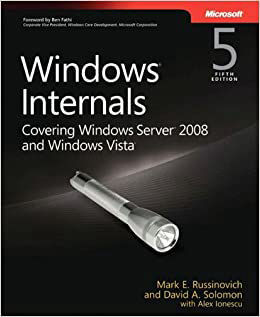

Windows Internals 4th Edition
NT 5
This book focuses on Windows 2000, XP and Server 2003 system internals, functions, processes and in-depth descriptions of certain APIs and the Kernel

Windows Internals 5th Edition
Early NT 6
This book looks into the Internals of the start of NT 6 (Vista\2k8) .

Windows Internals 6th Edition
NT 6
Mobirise Site Creator offers a huge
collection of 3500+ site blocks, templates and themes with thousands flexible options.
Windows Internals 7th Edition Part 1
NT 6+
This book delves into the key components relating to NT's System, Windows Kernel and more